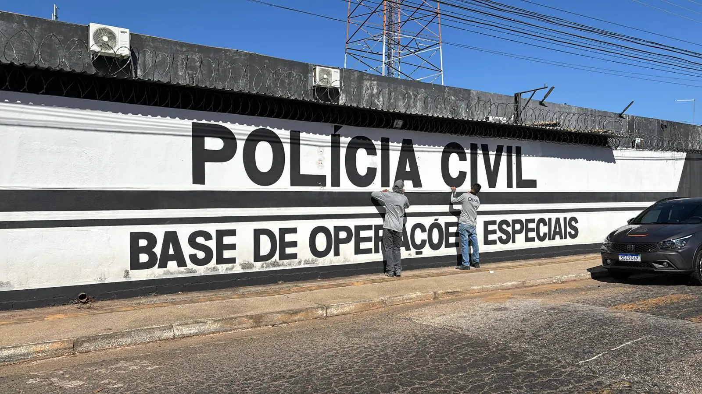
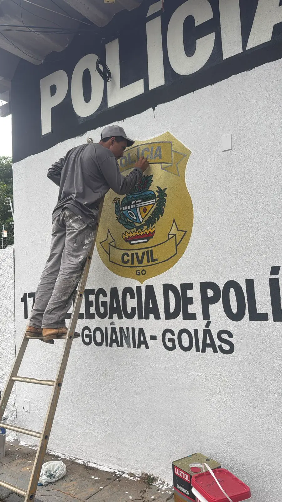
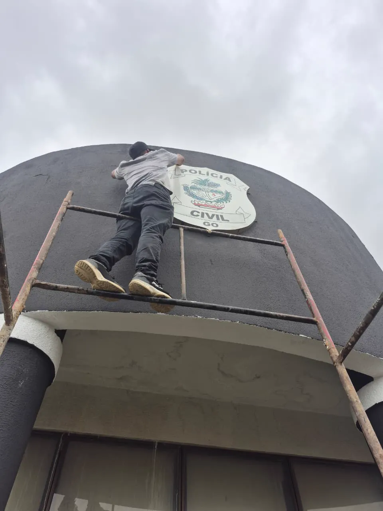
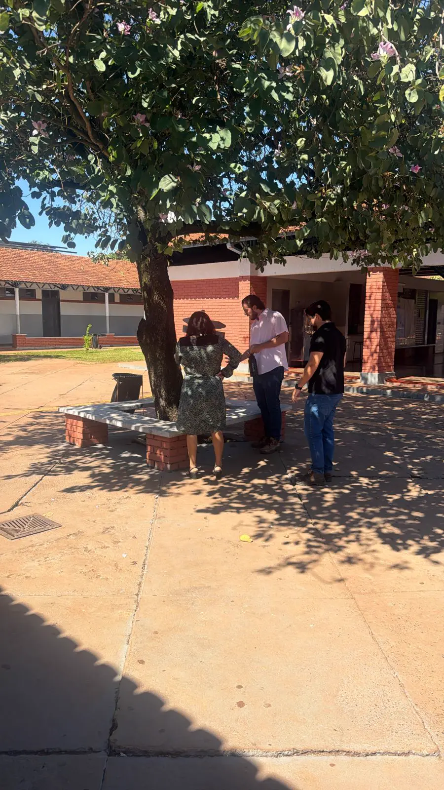
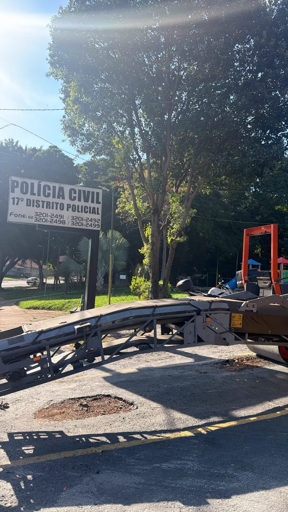
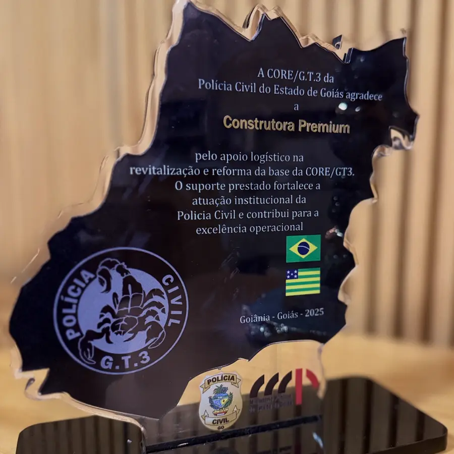
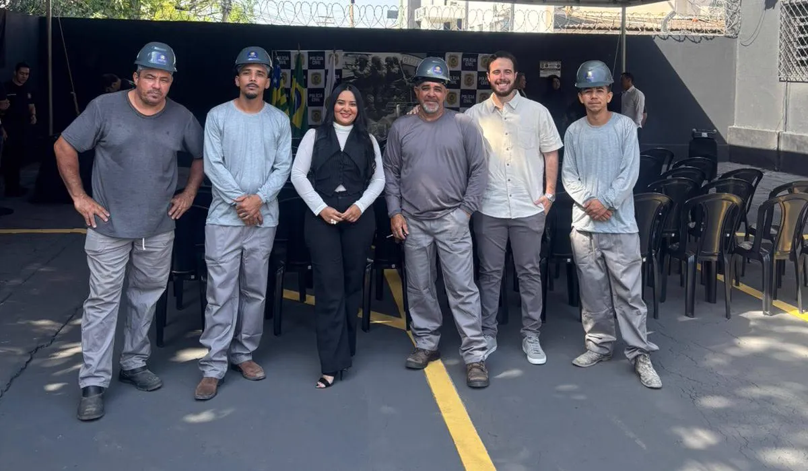
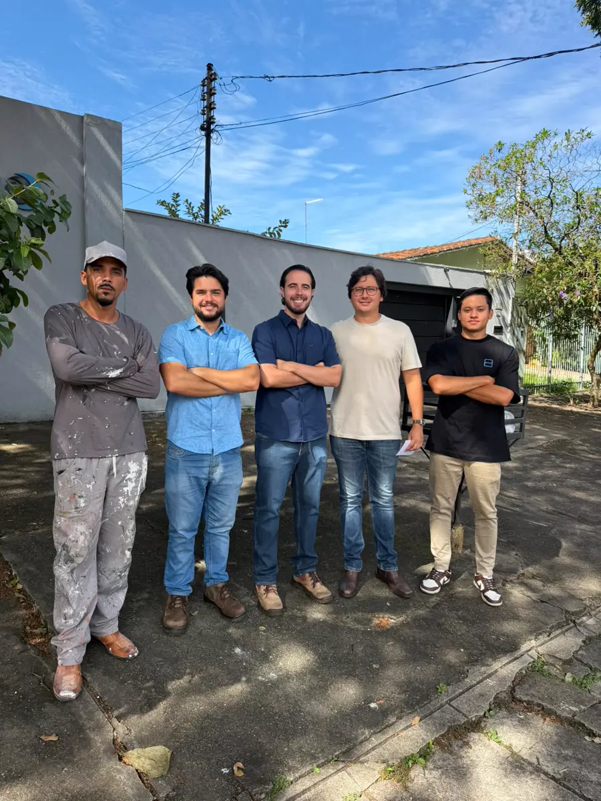
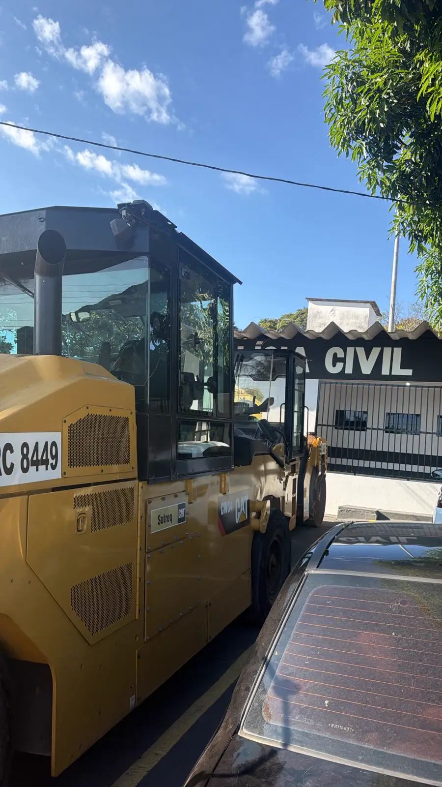

Projetos, construção e reforma para PM-GO, PC-GO, PC-DF, MPGO, SEDUC e Assembleia Legislativa. Delegacias, batalhões e colégios militares e estaduais entregues com o rigor que a fiscalização exige.
Atuação especializada em obras de segurança pública, ensino e estruturas legislativas, com documentação completa para licitações e órgãos fiscalizadores.
Projetos arquitetônicos, estruturais e complementares com toda a documentação técnica exigida em licitações, do memorial descritivo à ART.
Execução de obras novas para colégios militares e estaduais, delegacias e batalhões, com gestão de canteiro, medição semanal e cumprimento rigoroso de prazos.
Reformas estruturais, modernizações e ampliações sem interromper a operação das unidades, com protocolos de segurança e cronograma assistido.





"O suporte prestado fortalece a atuação institucional da Polícia Civil e contribui para a excelência operacional."
Programa estadual da SEDUC para manutenção e reformas em escolas públicas de Goiás. Planejamento, execução e prestação de contas dentro do fluxo do programa.
Modalidade de contratação para intervenções urgentes em estruturas públicas, com mobilização imediata de equipe e prazo reduzido de execução.
Execução de obras viabilizadas por emendas parlamentares e recursos da Assembleia Legislativa, com prestação de contas completa ao órgão e ao gabinete.
Também atendemos licitações tradicionais, convênios e recursos próprios.


A Construtora Premium é especializada em obras institucionais para órgãos de segurança, justiça, ensino e o legislativo, em Goiás e no Distrito Federal. Conhecemos as exigências de cada fiscalização e entregamos cada obra com habite-se, ART e termo de recebimento sem pendências.
Cada contrato segue plano de prazo formal, medições semanais documentadas e relatório de obra para o gestor. O resultado são mais de 65 obras entregues e 50.000 m² construídos para o Estado.
Sim. Atendemos licitações tradicionais, convênios, programas estaduais como o REFORMAR da SEDUC, contratações emergenciais e obras viabilizadas por emendas parlamentares. A equipe técnica analisa o edital ou o escopo e retorna com os próximos passos em até 1 dia útil.
Atendemos a Polícia Militar de Goiás (PM-GO), a Polícia Civil de Goiás (PC-GO), a Polícia Civil do Distrito Federal (PC-DF), o Ministério Público de Goiás (MPGO), a Secretaria de Educação (SEDUC) e a Assembleia Legislativa de Goiás (ALEGO).
Sim. A sede fica em Goiânia, mas executamos obras públicas em todo o estado de Goiás e também no Distrito Federal.
Cada obra é entregue com habite-se, ART e termo de recebimento sem pendências para a fiscalização, além de medições semanais documentadas e relatório de obra para o gestor durante toda a execução.
A contratação emergencial é a modalidade para intervenções urgentes em estruturas públicas, com prazo reduzido. Para demandas emergenciais, a Construtora Premium mobiliza equipe e canteiro rapidamente e dá retorno no mesmo dia.

Resposta inicial em até 1 dia útil. Para demandas emergenciais, retorno no mesmo dia.